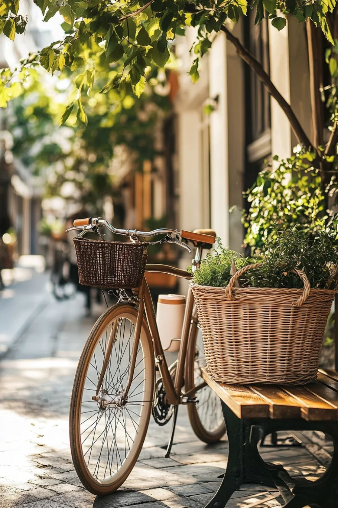

En grønnere hverdag
Tips til hverdagen
I køkkenet
Planlæg og brug maden
Se, hvad du allerede har i køleskab og skabe, før du handler. Planlæg et par måltider ud fra råvarerne, og gem rester til frokost eller en ny ret.
Opbevar maden synligt, og frys det ned, du ikke når at spise. Så bliver det lettere at mindske madspild i en travl uge.


Brug det, du har
I hjemmet
Reparér, genbrug og spar på energien
Giv ting en chance mere, før du køber nyt. Reparer det, der er gået i stykker, byt med andre, eller brug glas og beholdere til opbevaring.
Sluk lys og elektronik, når du ikke bruger dem, og vask tøj ved lavere temperatur, når det passer til tøjet. Små vaner kan hurtigt blive en naturlig del af dagen.
På farten
Transport
Vælg grønnere ture, når det passer
Gå eller tag cyklen på korte ture, hvis det kan lade sig gøre. Til længere ture kan offentlig transport eller samkørsel være gode alternativer.
Prøv at samle flere ærinder på én tur. Det sparer tid og kan gøre det lettere at lade bilen stå lidt oftere.


Gode valg i hverdagen
Indkøb
Køb med omtanke
Skriv en indkøbsliste, så du kun køber det, du har brug for. Vælg gerne varer med mindre emballage, og tag en genbrugspose med.
Kig efter holdbare ting, der kan repareres, og overvej brugt, når du mangler noget. Det er ikke nødvendigt at gøre alting på én gang – begynd med det, der føles nemt.

Kontakt os
GRØN – Det grønne hjørne
service@Grøn.dk
+45 51 78 02 72